Naruto era pra ser um mangá de culinária
Durante uma entrevista em 2012, Kishimoto revelou que Naruto era para ter sido um mangá de culinária!
E Para quem não sabe, “naruto” é o nome dado para um dos ingredientes do lámen japonês,
consistindo numa espécie de massa cozida com peixe, formando uma espiral no centro, quando cortada em fatias.
As roupas de Naruto e sasuke
A roupa do personagem Naruto é inspirada na roupa de Goku, já a roupa azul do Sasuke, foi uma homenagem ao Vegeta.
Naruto não seria humano
A ideia inicial de Masashi Kishimoto era que o ninja fosse uma raposa com a habilidade de se disfarçar de humano, assim como narra a lenda da Kitsune.
Para mais informaçõesﾠclique aqui.
Principais personagens
Naruto Uzumaki
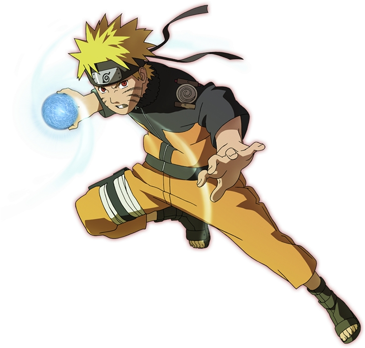Naruto é um jovem órfão habitante da Vila da Folha que sonha se tornar o quinto Hokage, o maior
guerreiro e governante da vila. Ao se graduar como ninja, descobre que tem um demônio raposa selado
dentro de si.Para informações detalhadasﾠclique aqui.
Sasuke Uchiha
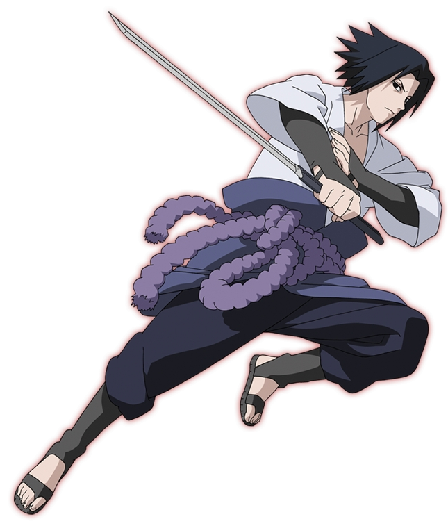Sasuke é o filho mais novo de Fugaku e Mikoto Uchiha, além de ser o último sobrevivente do clã em Konoha
quando a série começa. Após o trágico massacre de sua família quando ele era uma criança pequena,
o garoto se tornou frio e distante, tendo como seu único objetivo vingança contra aquele que matou todo o seu clã. Para informações mais detalhadasﾠclique aqui.
Sakura Haruno
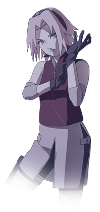No anime e mangá, Sakura é uma kunoichi afiliada com a vila de Konoha, e parte da equipe 7, que consiste
de si mesma, Naruto Uzumaki, Sasuke Uchiha e seu sensei, Kakashi Hatake. Sakura inicialmente tem
uma paixão por Sasuke, elogiando-o em cada situação, e acumulando desprezo sobre o menos qualificado Naruto.
Ao longo da série, ela começa a criar uma personalidade compassiva e generosa, crescendo mais sensível e emotiva, aceitando e apoiando Naruto. Para informações mais detalhadasﾠclique aqui
Kakashi Hatake
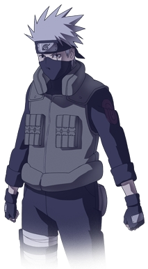Kakashi Hatake, também conhecido como O Ninja que Copia é um dos shinobis mais famosos do universo de
Naruto, tanto para fãs do anime, quanto para próprios personagens. Conhecido por possuir um Sharingan mesmo
sem ser um membro do clã Uchiha, ele utiliza de seu olho para copiar os jutsus de seus oponentes em
combate, tendo copiado mais de 1000 jutsus desde que ganhou seu Sharingan. Para informações mais detalhadasﾠclique aqui
Imagens dos personagens principais
Naruto Uzumaki
 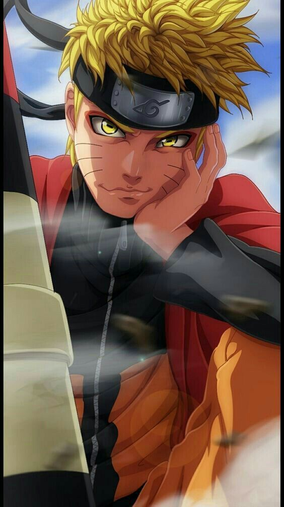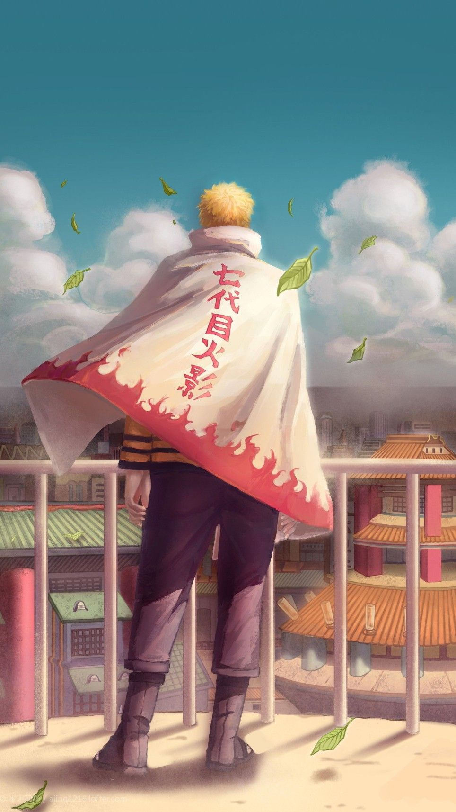
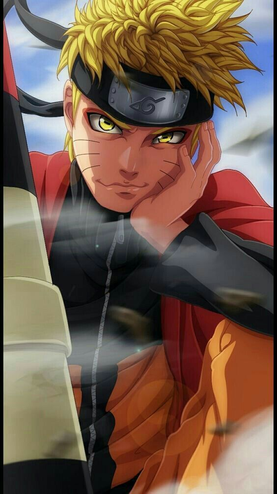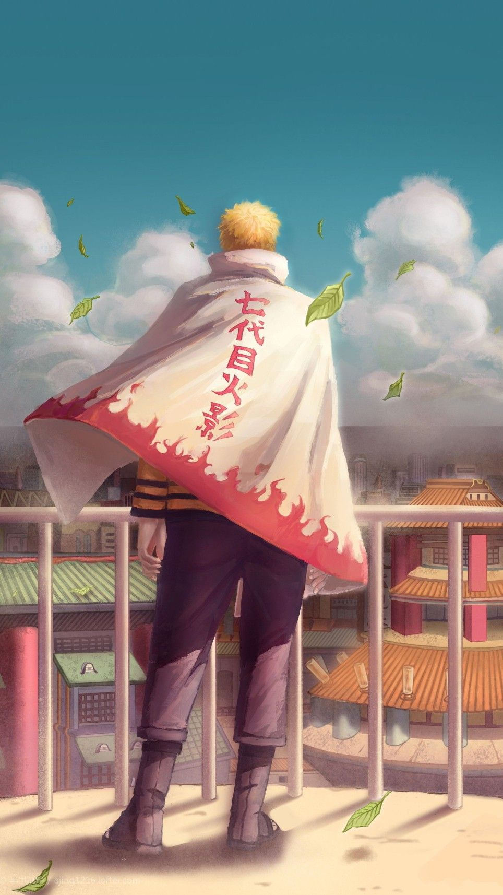
Sasuke Uchiha
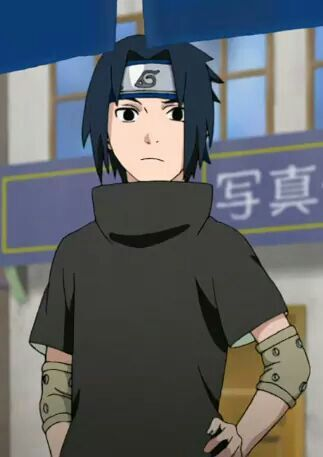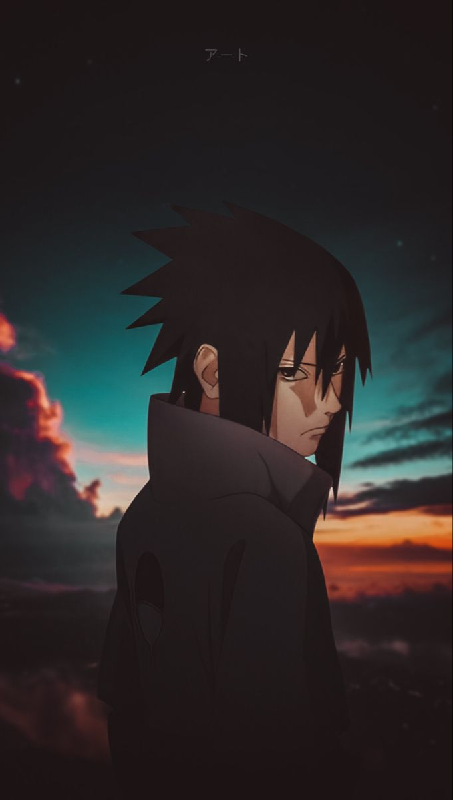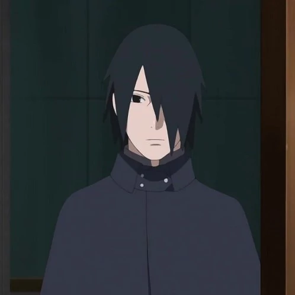
Sakura Haruno
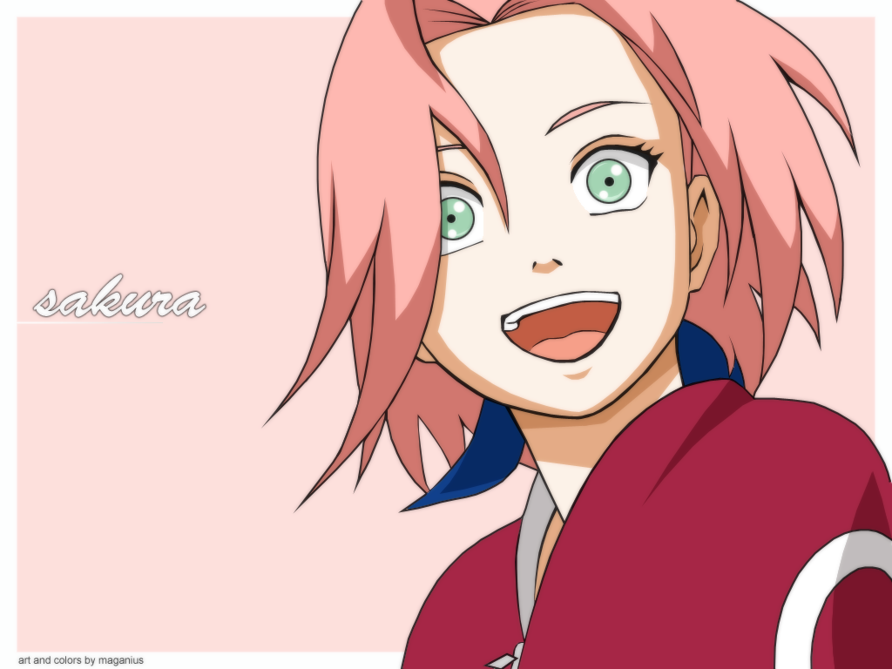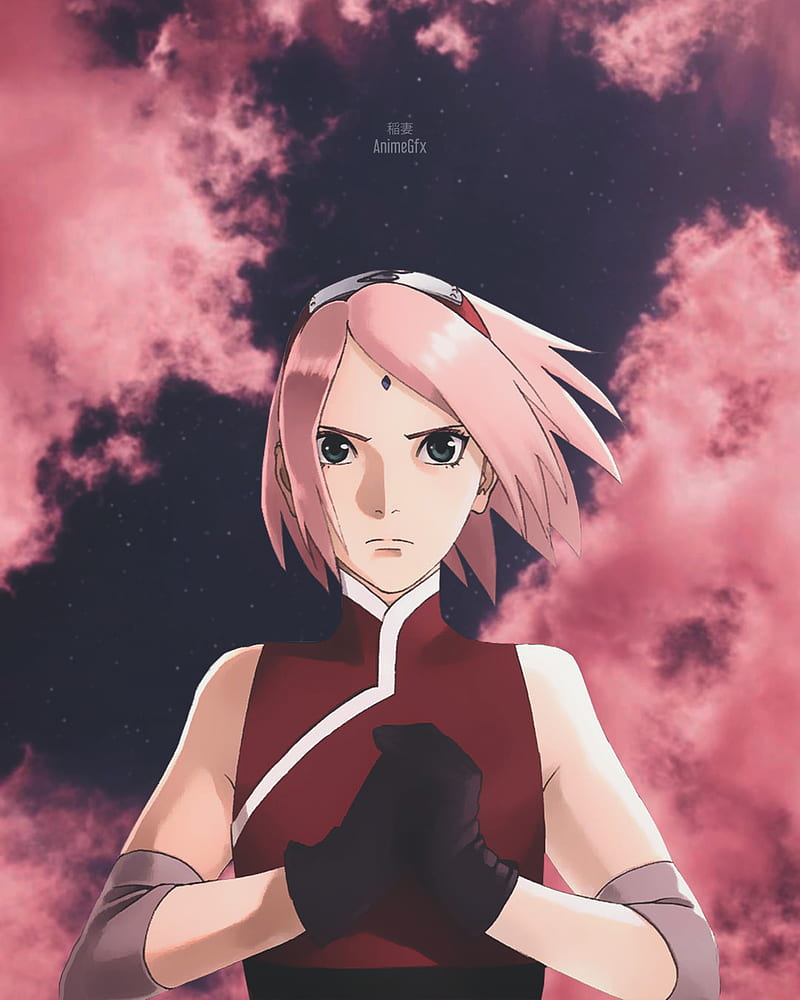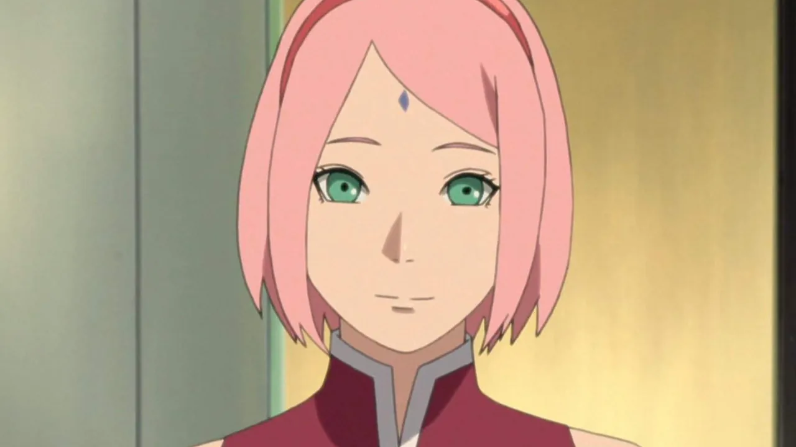
Kakashi Hatake
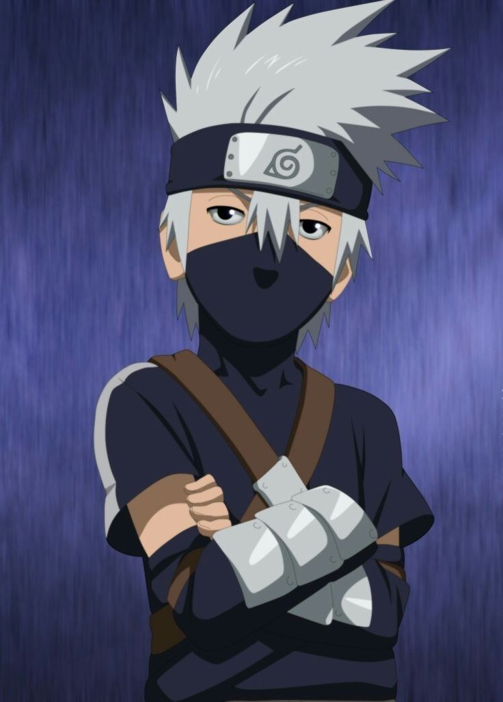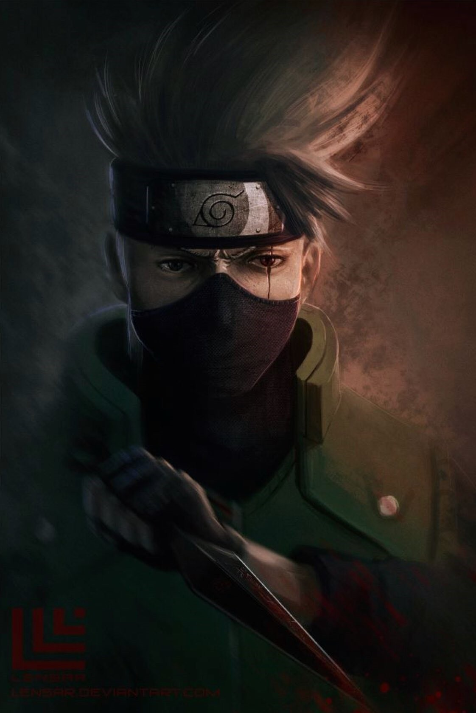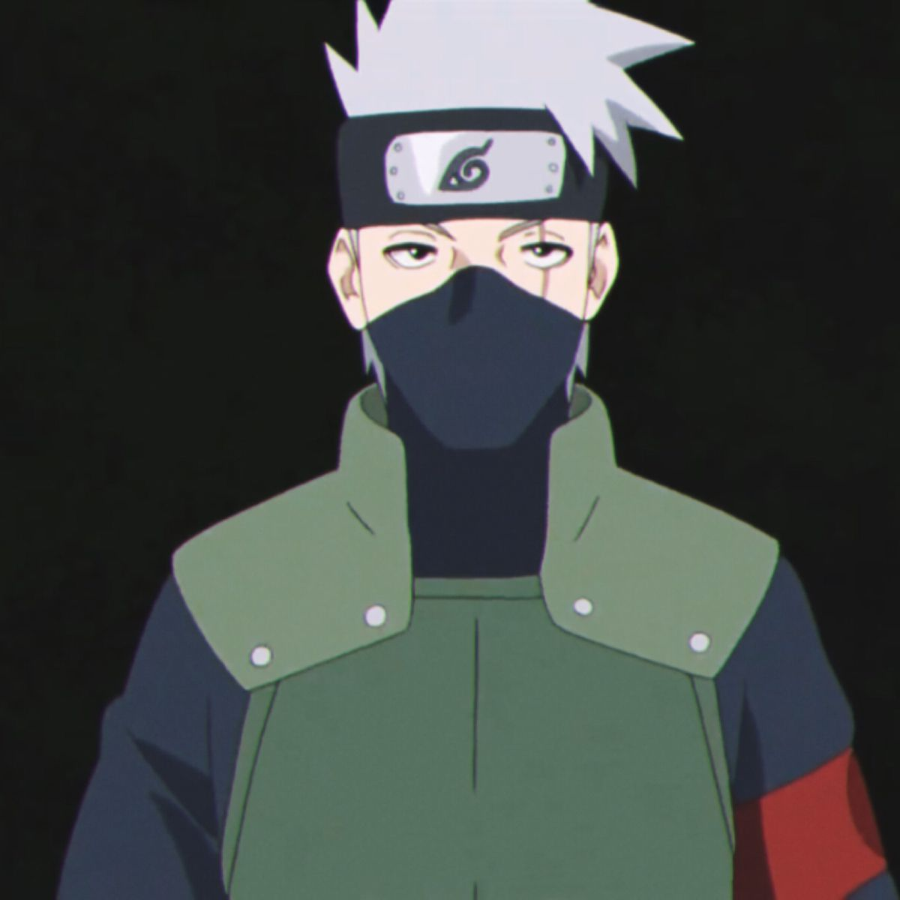